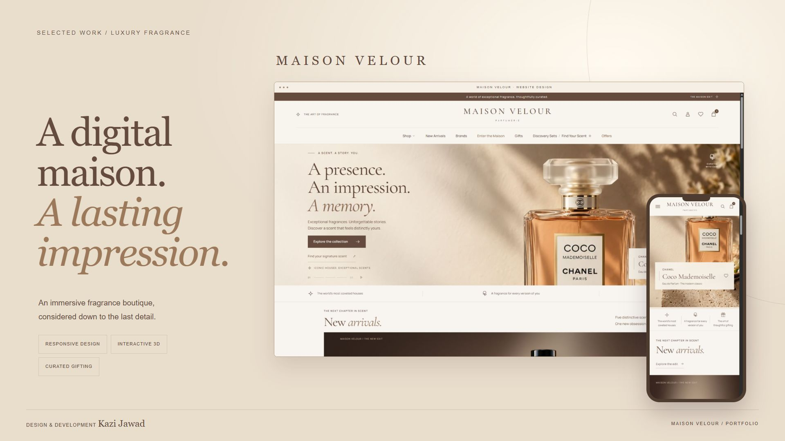
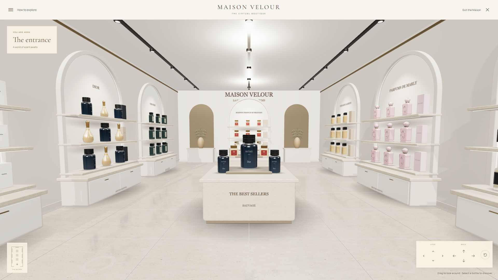
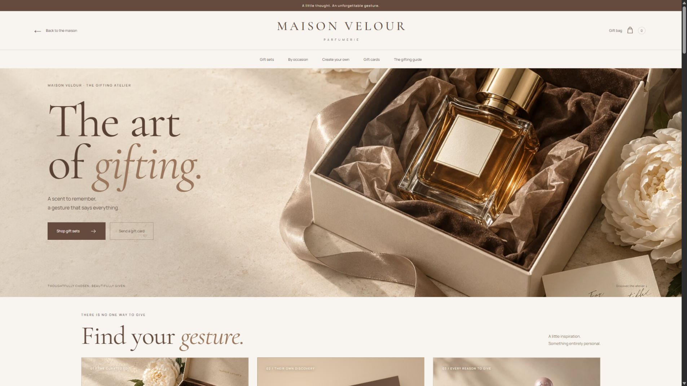

Articles & Projects / 04
Maison Velour — Immersive Fragrance Boutique
An immersive fragrance boutique, from discovery to gifting.

Maison Velour brings the atmosphere of a perfume boutique into the browser. I combined a warm cocoa-and-ivory visual identity with fragrance discovery, 3D product exploration, and a connected gifting experience.
1. Explore the virtual maison
A full-screen boutique turns product discovery into a spatial experience. Keyboard and on-screen movement, an A–Z directory, and a position-tracking mini-map help visitors explore the houses. Selecting a bottle opens a closer, interactive view.

2. Make gifting personal
The gifting atelier filters sets by occasion, recipient, budget, and scent. Its live preview links packaging choices with the chosen fragrance. The Privilege Collection adds saved invitation reveals and tiers that unlock or relock as the local bag changes.

3. Built as a storefront prototype
HTML, CSS, JavaScript modules, and Three.js power the responsive experience. Browser storage keeps demo selections between visits. Checkout, accounts, stock, and fulfilment are not connected; commercial values and rewards demonstrate the proposed shopping flow.